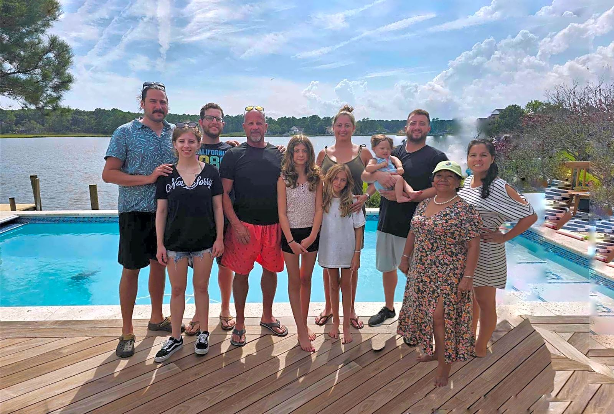

<!DOCTYPE html>
<html lang="en">
</html>
<head> 
    <meta charset="UTF-8">
    <meta name="viewport" content="width=device-width,initial-scale=1.0">
    <meta http-equiv="X-UA-Compatible" content="ie=edge">   
    <title>Passero</title>
    <link rel="stylesheet" href="stylesheet.css">
</head>
<header>
   
    <div class="header">
        <h1 class="logo">Passero Family</h1>
   <nav>
     <ul class="list">
        <li class="child"><a href="#">Home</a></li>
        <li class="child"><a href="#">Memories</a></li>
        <li class="child"><a href="#">Life Story</a></li>
    </ul>
</nav>
    

</div>
</header>
<body>
<h2 class="title">We are like a family</h2>
<p class="text">Passero is a family-owned restaurant that has been serving delicious food for generations. Our passion for cooking and commitment to quality ingredients have made us a beloved destination for food lovers. We take pride in our warm and welcoming atmosphere, where every guest feels like part of our family. From our traditional recipes to our innovative dishes, we strive to create a memorable dining experience for everyone who walks through our doors. Join us for a meal and become part of the Passero family!</p>
<p class="text">At Passero, we believe that food is not just about sustenance, but also about bringing people together. Our menu features a wide variety of dishes that cater to all tastes and preferences, from classic comfort food to modern culinary creations. We source our ingredients locally whenever possible, ensuring that our dishes are fresh and flavorful. Our chefs are passionate about their craft and are dedicated to creating dishes that not only taste great but also look beautiful on the plate. Whether you're celebrating a special occasion or simply enjoying a night out with friends, we invite you to experience the warmth and hospitality of Passero. Come and taste the love that goes into every dish we serve!</p>    
</body>
